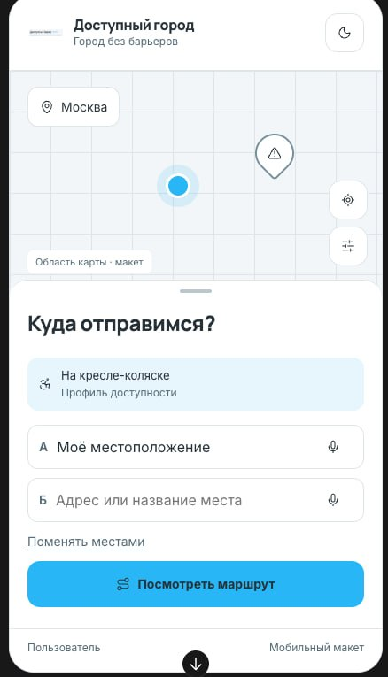
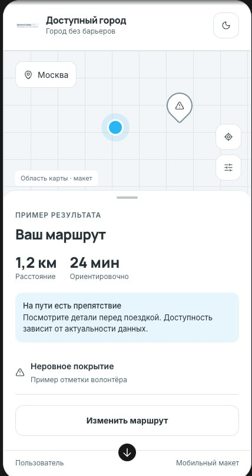
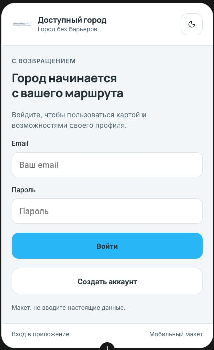
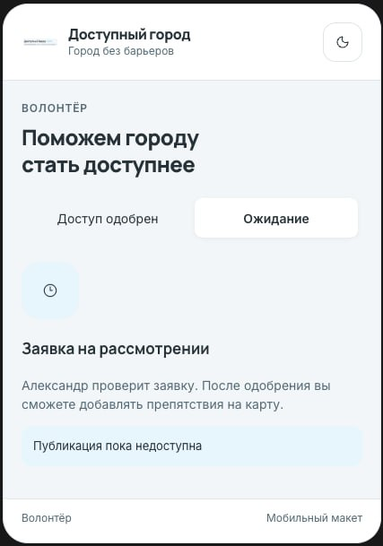

🚧
Непредсказуемые маршруты
Лестницы, высокие бордюры и брусчатка появляются на пути внезапно — информации о них нет в обычных картах.
Навигатор для людей с ограниченными возможностями и мам с колясками. Строим маршруты с учётом реальных барьеров — ступеней, бордюров и отсутствия пандусов.

Люди с ограниченными возможностями, маломобильные граждане и родители с колясками каждый день сталкиваются с барьерами, о которых большинство даже не задумывается.
Лестницы, высокие бордюры и брусчатка появляются на пути внезапно — информации о них нет в обычных картах.
Поиск доступного пути занимает часы. Каждая поездка превращается в квест с непредсказуемым финалом.
Без точных данных человек вынужден просить о сопровождении даже для простых перемещений.
Мы создаём навигатор, который строит маршруты для людей с ограниченными возможностями и мам с колясками — с учётом реальных барьеров.
Построение маршрута
с профилем доступности

Маршрут с отметками препятствий

Вход и личный кабинет
В отличие от конкурентов, информация о маршрутах регулярно проверяется и обновляется — вы получаете актуальные данные о барьерах.
Ступени, бордюры, брусчатка, отсутствие лифтов — всё это влияет на оценку доступности маршрута.
Отдельные режимы для колясочников, людей с ограниченными возможностями, пожилых и мам с детскими колясками — маршрут подстраивается под вас.
Каждый маршрут получает балл и отметки препятствий — вы сразу видите, насколько он комфортен.
Укажите адреса или выберите на карте. Мы подскажем варианты по мере ввода.
Кресло-коляска, маломобильный профиль, пожилой человек или мама с коляской — маршрут адаптируется под вас.
Маршрут с оценкой доступности, отмеченными барьерами и временем в пути.
Информация о барьерах и доступности постоянно обновляется. Присоединяйтесь — помогите сделать город удобнее для всех.

Добавляйте и проверяйте препятствия: ступени, бордюры, отсутствие пандусов.
Каждая отметка проходит проверку — пользователи видят только актуальную информацию.
Помогите улучшить доступность именно в вашем районе — данные работают сразу.
Присоединяйтесь к сообществу в Telegram — помогайте людям с ограниченными возможностями и мамам с колясками передвигаться по городу удобнее.